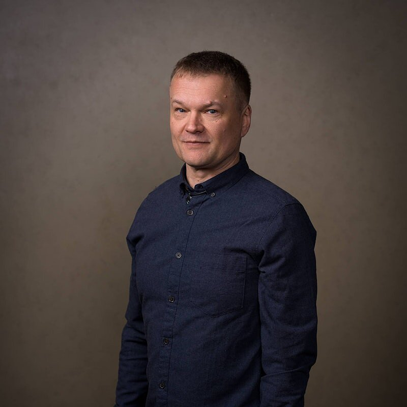

Senior IT professional and team lead with 27 years of experience building digital services, infrastructure and hands-on production work. I combine technical architecture, automation and creative problem-solving to improve delivery reliability, quality and development speed. Day to day I move between four closely related roles — team lead / system manager, DevOps engineer, multimedia engineer and senior technical consultant — because in practice the work overlaps: reliable systems, clear processes, good tooling and a security-conscious mindset all feed each other.
Leading and mentoring cross-functional teams, prioritization, decision-making and delivery under pressure.
CI/CD pipelines, repeatable deploy patterns, cloud/platform foundations (Azure, Microsoft 365, Google Workspace).
Content production, technical implementation and publishing workflows — from idea to shipped, maintained product.
Bridging technical delivery and business stakeholders — flexible, cross-domain IT advisory across DevOps, platform, and delivery leadership.
My latest reference from Visma warmly recommends me for demanding hands-on expert, architecture, and release work, and also for team-lead and manager responsibilities. Fuller references from managers, directors, and technical peers are available on request as a separate document.
From peer and team feedback gathered through a structured 1:1 goal-setting and feedback tool used with the team.
Led the cross-functional response to a high-traffic financial invoicing web application suffering degraded performance under load. Coordinated fixes across application code, network/firewall configuration, and server session routing at the same time, rather than treating it as a single-layer fix. Built a shared measurement framework with the team so improvements could be verified with data, and kept management and customers informed throughout the effort. Result: a significant, measurable improvement in end-user experience and application performance.
A continuously evolving lab of 10+ machines (10 PCs, 2 MacBooks and 5 iPads) is where I safely break and rebuild infrastructure before it ever touches a production account. I use it as a private sandbox for Terraform and Azure scenarios — provisioning, tearing down and re-running the same patterns until they are boringly reliable — and as the target for deployment pipelines that ship my own apps and published material across several stacks.
Terraform-driven Azure experiments, identity and networking trials, and infrastructure changes that are meant to fail fast and recover cleanly — without risking customer environments.
CI/CD paths from the lab into my own applications and content sites — GitHub Actions, Cloudflare and related tooling — so every experiment has a concrete shipping target.
Architecture sketch — lab → Terraform/Azure + pipelines → own apps & material
My current learning focus follows the roles above directly: deepening Azure infrastructure knowledge and expanding into AWS, Infrastructure as Code with Terraform, and modern service management with ITIL 4 — alongside running Microsoft 365 and Google Workspace environments end to end and getting faster/cleaner CI/CD releases with GitHub Actions and Cloudflare. On the AI tooling side, I use GitHub Copilot Pro and Gemini daily (plus other free-tier assistants), and I'm adding Claude to build more robust workflows and dedicated agents for different roles. It's less about collecting certificates and more about staying hands-on — testing new tooling in the home lab on real, working projects and folding what works back into day-to-day practice. Next challenge I'm setting for myself: building small-scale apps to solve my own everyday problems, likely using multiple AI agents in different roles (architect, coder, reviewer) working together rather than a single assistant doing everything.
Music has been my hobby for 40 years — keyboards, percussion, vocals — fitted in between work and family. Studio time, iPad music apps (part of the same 5-iPad setup used for hands-on tech testing), standalone grooveboxes and samplers (MPC, SP). In my spare time I build Loopy Pro templates and Koala Sampler SoundSets and share them for free under the TheTemplateDude / TheTemplateDad project — a year-long, self-directed project combining content creation, technical build and publishing into one working whole.
→ Visit thetemplatedad.com — my artist profile
Family life is part of this balance too: my 8-year-old daughter is often right there with me during studio/audio sessions, and I coach my 17-year-old through kinetic sports to help keep them active and in shape.
Selected LinkedIn articles on AI, DevOps and team leadership. Cover-image collage coming later.